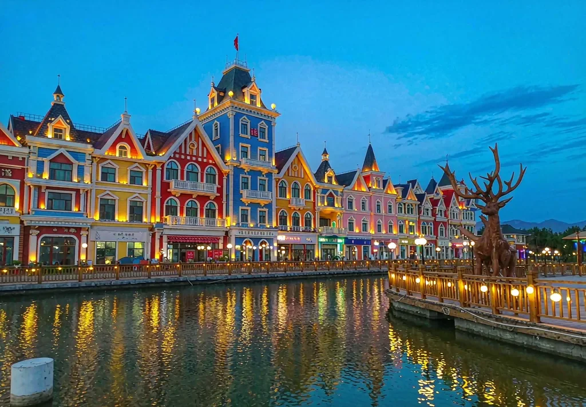
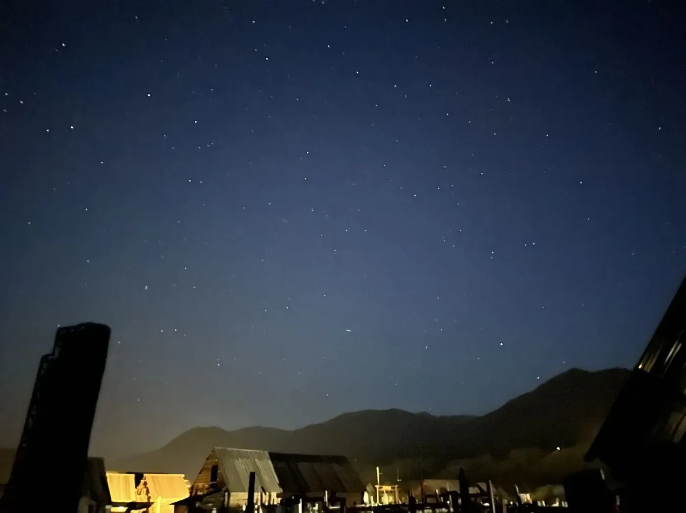
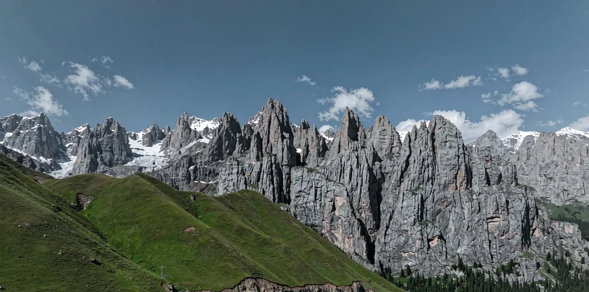
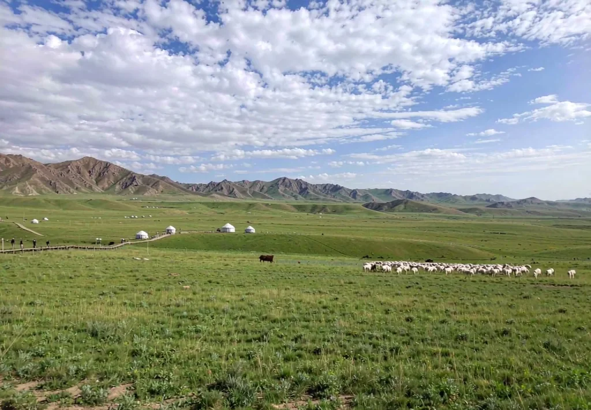
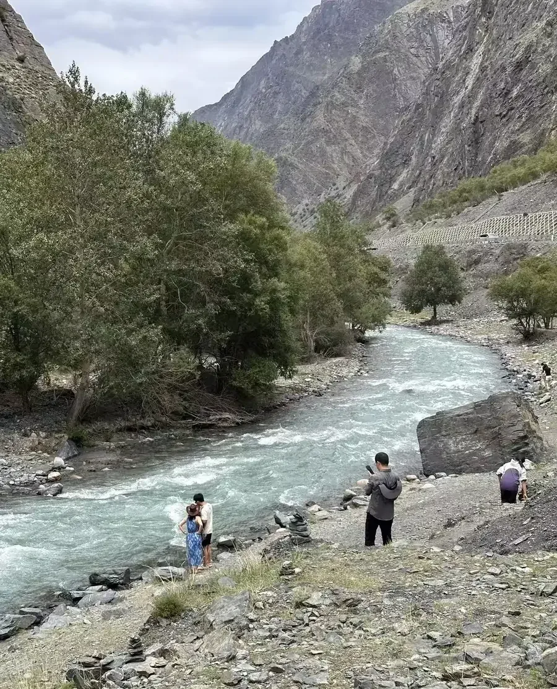
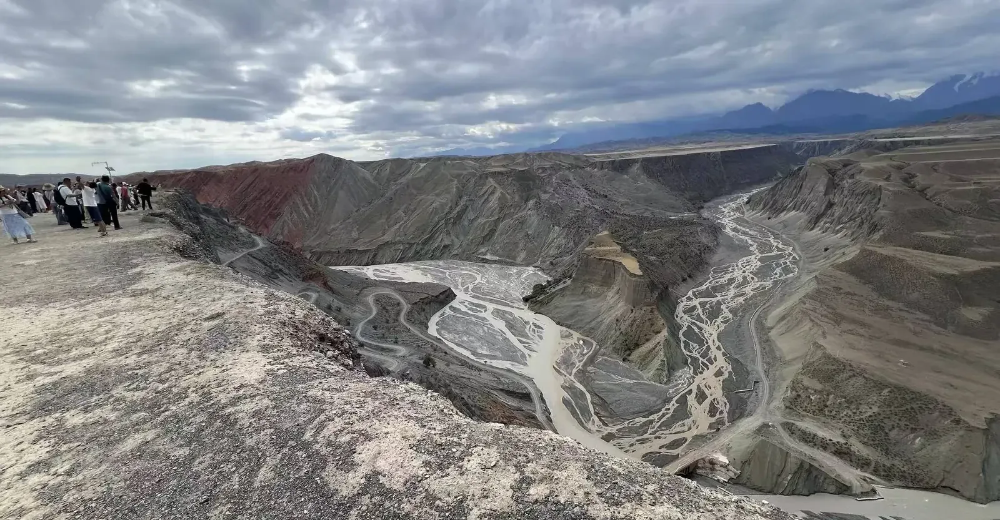
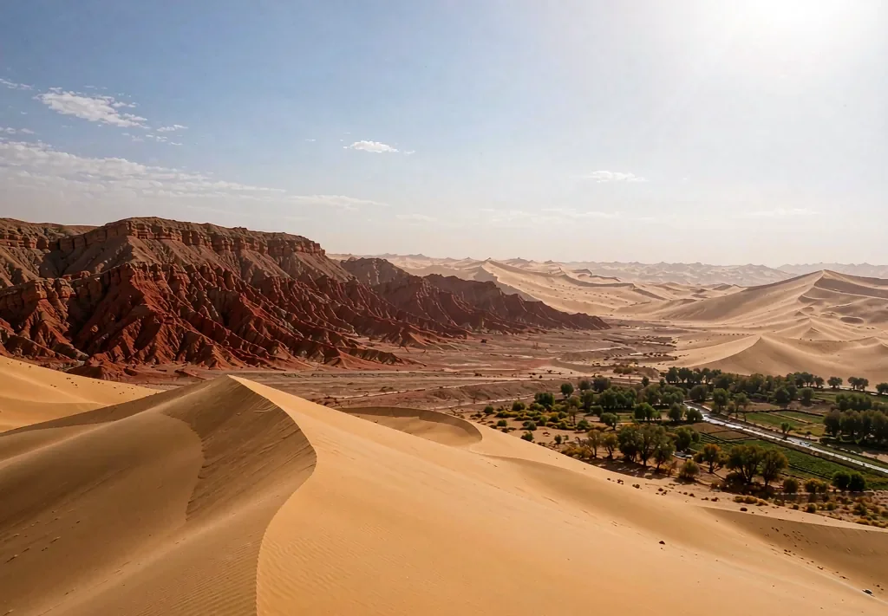

北疆＋伊犁＋獨庫 16 日
2027/06/10 – 06/25
2027/06/10 – 06/25
2027/06/10 – 06/25 ・ 南京轉機 ・ 專屬小包團
專屬司機＋私人導遊的北疆完整環線：從台北經南京轉機進出烏魯木齊，
S21 沙漠公路 → 喀納斯三灣 → 禾木晨霧 → 魔鬼城落日 → 賽里木湖環湖 → 果子溝大橋 → 伊昭公路 → 昭蘇天馬 → 那拉提空中草原 → 獨庫公路北段 → 吐魯番，一次不折返。
| 日期 | 航段 | 起降時間 | 說明 |
|---|---|---|---|
| 06/10（四） | 台北桃園 TPE → 南京祿口 NKG | 17:50 → 20:00 | 當日提取行李，入住機場周邊酒店 |
| 06/11（五） | 南京祿口 NKG → 烏魯木齊 URC | 13:20 → 18:15 | 需重新託運行李；落地專屬司機接機 |
| 06/24（四） | 烏魯木齊 URC → 南京祿口 NKG | 17:00 → 21:25 | 吐魯番當日返回機場，須 13:00 前出發 |
| 06/25（五） | 南京祿口 NKG → 台北桃園 TPE | 14:45 → 16:50 | 需重新託運行李，結束旅程 |
← 左右滑動查看完整表格 →












包車實際駕駛路段（不含飛機、景區區間車、市區短途）
| 日期 | 行程區段 | 里程 | 車程 |
|---|---|---|---|
| 06/12 | 烏魯木齊 → S21 沙漠公路 → 布爾津 | 530-600 km | 6-7.5 hr |
| 06/13 | 布爾津 → 喀納斯 → 禾木村 | 150-180 km | 3-4 hr |
| 06/15 | 禾木 → 烏爾禾魔鬼城 | 350-500 km | 5-7 hr |
| 06/16 | 烏爾禾 → 賽里木湖 | 538 km | 6.5 hr |
| 06/17 | 賽里木湖 → 伊寧（經果子溝大橋） | 150-170 km | 2-2.5 hr |
| 06/18 | 伊寧 → 昭蘇 → 特克斯（伊昭公路） | 220 km | 4-5 hr |
| 06/19 | 特克斯 → 那拉提（經鞏留） | 250 km | 3-4 hr |
| 06/21 | 那拉提 → 獨庫公路北段 → 奎屯 | 220-260 km | 5-7 hr |
| 06/22 | 奎屯 → 烏魯木齊（經獨山子大峽谷） | 240 km | 3-4 hr |
| 06/23 | 烏魯木齊 → 吐魯番 | 190 km | 2.5-3 hr |
| 06/24 | 吐魯番 → 烏魯木齊天山機場 | 200 km | 2.5-3 hr |
| 合計 | 約 3,040-3,350 km | 約 42.5-53.5 hr | |
← 左右滑動查看完整表格 →